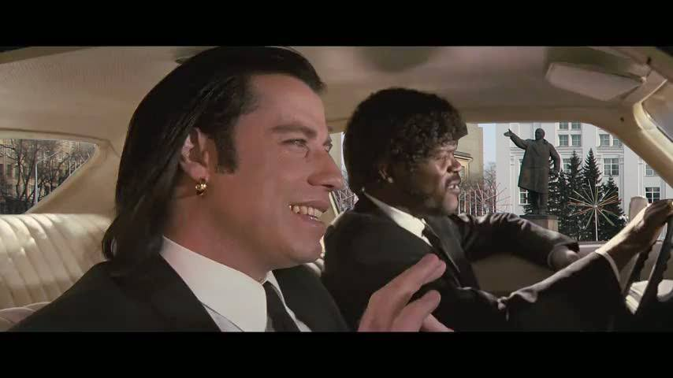

Макдональдс, конечно, очень калориен. В меню вроде всё по-честному, даже указывается количество калорий, мол, гляньте, вы можете сами всё контролировать. Но, нет.
2500 калорий, якобы нужные ежедневно мужчине, на самом деле современным мужчиной не сжигаются. Мужчиной, который ездит на работу и обратно на своей Toyota Corolla, ногами ходит только в туалет, а спортом занимается только по телевизору. Такому мужчине, чтобы оставаться в своём субтильном теле нужно максимум 2000 калорий.

Мужчине, который хочет похудеть, но не хочет заниматься спортом, я бы рекомендовал попробовать употреблять в пищу не больше 1300.
1353 калории, которые содержат средняя кола и Биг Тейсти это, к примеру, 3,5 часа езды на велосипеде, если ваш вес в районе 83 килограммов. Не на Королле, а на велосипеде.
Другой критический минус макдональдс-фуда — практическое отсутствие в блюдах клетчатки — естественного фильтра желудочно-кишечного тракта.
Вышенаписанное, разумеется, относится не только к Макдональдсу. Большинство его хейтеров не стесняются писать, что не будут есть ЭТО, наяривая перед монитором чай с печеньками и сгущёнкой.